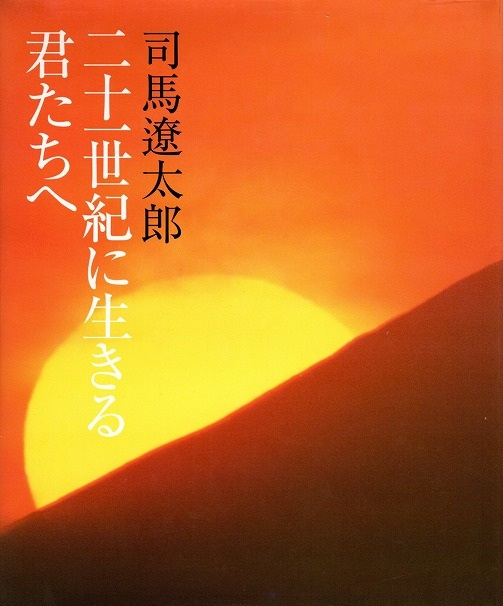

たくさんの絵本の中で たまたま読んでみて 印象に残った絵本を紹介します

この本は絵本ではありません。司馬遼太郎さんが日本の未来を背負って立つ子供たちに残した熱いメッセージです。小学校6年生の国語に掲載されていたそうです。
司馬さんが書かれていた歴史小説の創作で得られた多くの知識や得られた心構えについての教えです。「人間は自然の中で生かされている」という強い信念を後世の人たちに伝えようとしています。これからの時代を作っていく21世紀に生きる子供達に残された大切なメッセージとなるとおもいます。
司馬さんが書かれていた歴史小説の創作で得られた多くの知識や得られた心構えについての教えです。「人間は自然の中で生かされている」という強い信念を後世の人たちに伝えようとしています。これからの時代を作っていく21世紀に生きる子供達に残された大切なメッセージとなるとおもいます。